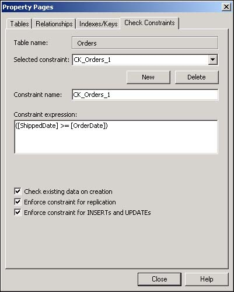

Note
The rest of this chapter will use the Northwind database because it has a great structure that makes it easy to show how to use necessary techniques. |
One of the main concepts to keep in mind when you're creating databases is that you need to provide a means to keep garbage (bad data) out of your tables. Default values make sure that each new record begins with valid data. An example of this is if you want to make sure that a date is entered for the order date of an invoice. You could set up a default value of today's date for new records.
Constraints allow you to specify what business rules you want to use with your tables, such as if you want to allow dates that are entered into the Order Date field to come after today's date. This How-To explains how to use defaults and constraints to their full potential and how to create them in Visual Studio .NET.
You have started down the path of handling your business rules by creating tables and setting the data types of the columns in the tables. You have even set up relationships between tables. Now you want to make life easier for your users and suggest what values they could use, and more importantly, what values are acceptable. How do you do this by defining defaults and constraints?
By using default values, you can guide your users and save them time. For example, perhaps you have a mailing list application, and the user is entering addresses. If the majority of the entries are from Washington (or WA), then you could set the default property of the State field to be WA.
Check constraints, not to be confused with the constraint type of index, allow you to create validation clauses that can control data that goes into the tables. An example of this would be if you didn't want someone from California (CA) entered into the addresses table from the last paragraph. You could then enter a constraint check that would read something like State <> 'CA'.
Note
The rest of this chapter will use the Northwind database because it has a great structure that makes it easy to show how to use necessary techniques. |
For this How-To, in Northwind's Orders table, you are going to add a default value to the OrderDate column and a check constraint that validates the ShipDate to make sure it occurs on or after the OrderDate.
Using the Server Explorer, expand the tables branch in the Northwind database, right-click on the Orders table, and choose Design Table.
Place the cursor in the OrderDate column.
Type GetDate() in the Default Value property. The GetDate() function returns the current system date and time. This squares away the default value.
To enter the check constraint, open the Property Pages dialog box by right-clicking on the column and choosing Check Contraints from the menu.
Click New on the Property Page dialog box.
Enter ([ShippedDate] >= [OrderDate]) into the Constraint Expression. You can see the completed constraint in Figure 2.9. Notice that you can also specify when the constraint will be checked by selecting the options located at the bottom of the Check Constraints page.

Click OK to accept the new constraint.
When a new record is saved to the Orders table, if no OrderDate is added, then the GetDate() will add the system date. After that, the constraint that was added will check to see that the ShippedDate entered falls on or after the OrderDate. If this is the case, then an error message will be displayed.
Default values make users' lives easier when they can be used. You can also use default values so that users will be less tempted to leave values blank, or NULL.
Check constraints allow you to further control how data is entered into your database. They can be used both when modifying data and when adding new records. Be sure to set up what you need for constraints when you are creating the database.